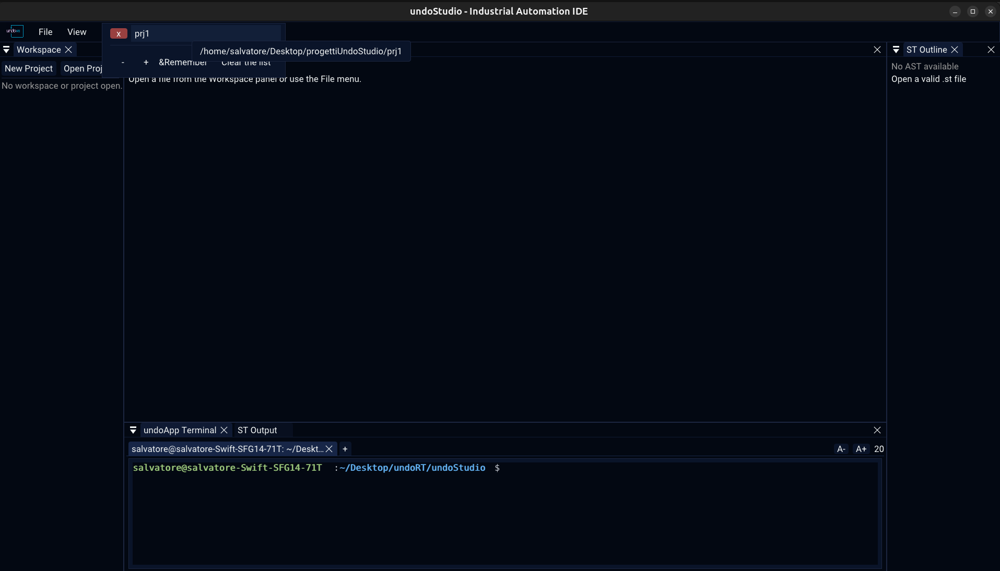

|
undoStudio
The IDE of the undoRT ecosystem
|
|
undoStudio
The IDE of the undoRT ecosystem
|
Two lists, both remembered between runs, both one click away and neither of them opening anything on its own.

| Recent projects | File > Open Recent Projects, or Ctrl+R |
| Recent files | File > Open Recent Files, or Ctrl+P |
Ctrl+P is what reaches for a file in VS Code. Ctrl+R is the recent projects, so the file list could not have had it, and the two are worth telling apart on the keyboard as well as in the menu.
Both keys are left alone while a code editor or the terminal has the keyboard, where the same two keys mean something else entirely.
Nothing is reopened on its own. A project is not opened at startup because it happens to be on disk, and a file is not reopened because it was open last time: the list is one key away, and starting the IDE with somebody's work already loaded is a surprise.
| ↑ ↓ Enter | walk the list and open the one chosen, without a mouse — ImGui keyboard navigation is on |
**x** | forget that one entry |
| Hover | the full path |
| Remember | how many to keep |
| Clear the list | empty it |
**Esc**, or a click elsewhere | close |
A row is its full path as far as its identity goes, not its name: two projects can be called main in two different folders, and a row identified by its name is one widget drawn twice, so the second can never be picked.
An entry whose file or folder is gone is kept and shown as **(missing)**, rather than dropped. An entry vanishing is never a mistake, and a name that does nothing when clicked is worse than one that says why.
Both lists read and write the same max key in the same [recent] section of undoStudio.ini. There is nothing useful to configure separately about how much of two lists of the same kind to remember, and the limit is editable in the popup it governs — a limit reached by opening more than ten projects is a limit nobody could reach deliberately.
Changing it through either list trims the other on the next load.